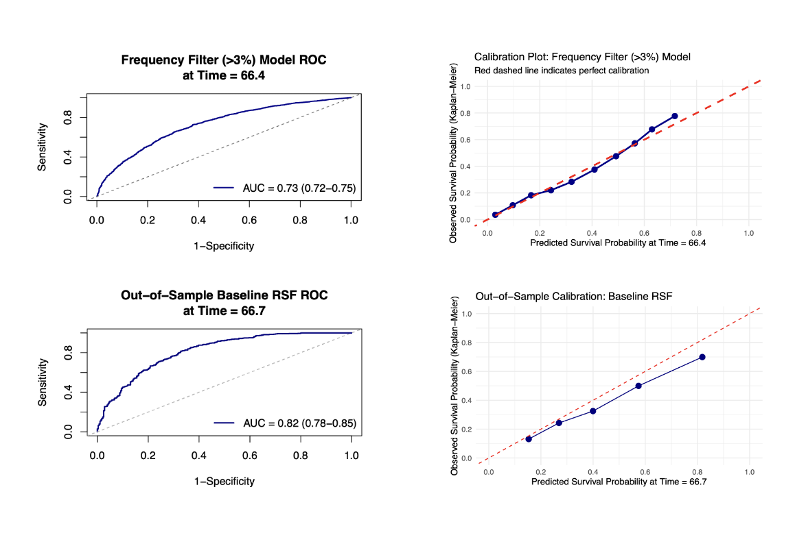
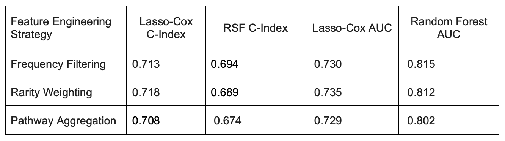

About
The MSK-CHORD cohort includes patients with non-small cell lung cancer (NSCLC) who have both detailed clinical information and high-dimensional genomic mutation data. I focused on modeling how different genomic engineering strategies affect survival prediction with distinct machine learning modeling methods.
The primary outcome was overall survival, defined using left-truncated time-to-event data with entry time, exit time, and event status. I included patients with complete clinical covariates and genomic mutation profiles, restricting the analysis to individuals with non-missing survival and predictor data to ensure consistent model fitting.
Methods
I fit Lasso-Cox & Random Forest Survival Models respectively to each engineering method with the demographical and genomic covariates (see details below). Analysis was performed in R using the survival & LTRCtrees package.
- Primary outcome: Time-dependent AUC & Harrell's C-index
- Model: Lasso-Cox & Random Forest Survival Models (with left truncation)
- Covariates: Clinical Variables: Age at diagnosis, Smoking status, Disease stage, Prior treatment status, Gender, Binary mutation indicators (0/1) for the whole panel of genes collected
- Software: R 4.4.1 (2024-06-14)
Results
Random Survival Forests achieved substantially higher time-dependent discrimination (AUC = 0.82) for late-stage mortality compared to traditional frequency filtering models (AUC = 0.73).

While Lasso-Cox models maintain better C-Index, RSF achieved significantly higher time-dependent AUC, with rarity weighting performed slightly better performance for linear cox models.

Author
- Jintong Hong · University of Michigan